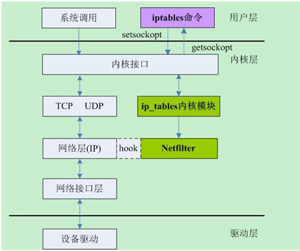
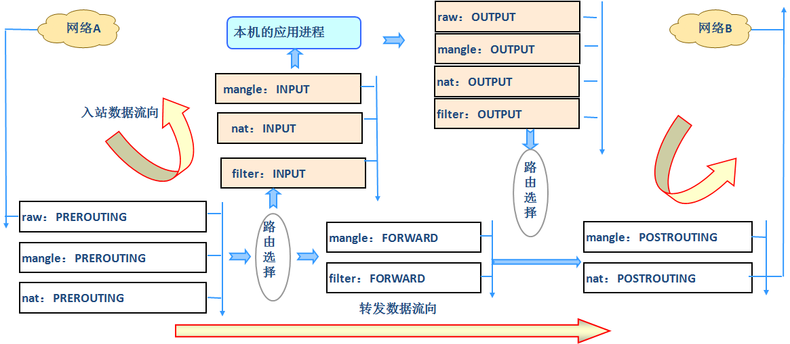

先要知道
LINUX防火墙：隔离内部网络和外部网络的隔离技术。
防火墙种类
- 第三方监控杀毒软件
- 系统策略
- 文件权限
- 防火墙规则 ：原地址 目标地址 端口 协议 mac 数据包中的标志
- 类似ACL访问控制列表： 过滤
从逻辑上讲。防火墙可以大体分为主机防火墙和网络防火墙。
- 主机防火墙：针对于单个主机进行防护。
- 网络防火墙：往往处于网络入口或边缘，针对于网络入口进行防护，服务于防火墙背后的本地局域网。网络防火和主机防火墙并不冲突，可以理解为，网络防火墙主外(集体)，主机防火墙主内(个人)。
从物理上讲，防火墙可以分为硬件防火墙和软件防火墙。
- 硬件防火墙：在硬件级别实现部分防火墙功能，另一部分功能基于软件实现，性能高，成本高。如：思科ASA、华为防火墙、天融信防火等。
- 软件防火墙：应用软件处理逻辑运行于通用硬件平台之上的防火墙，性能低，成本低。如：iptables、firewall（CentOS7独有的）等。
iptables相关概念
iptables其实不是真正的防火墙，我们可以把它理解成一个客户端代理，用户通过 iptables这个代理，将用户的安全设定执行到对应的安全框架中，这个安全框架才是直正的防火墙，这个框架的名字叫netfilter。netfilter才是防火墙真正的安全框架(framework)，netfilter位于内核空间。iptables其实是个命令行工具，位于用户空间，我们用这个工具操作真正的框架。
Netfilter/IPTables是Linux2.4.x之后新一代的Linux防火墙机制，是linux内核的一个子系统。Netfilter采用模块化设计，具有良好的可扩充性。其重要工具模块IPTables从用户态的iptables连接到内核态的Netfilter的架构中，Netfilter与IP协议栈是无缝契合的，并允许使用者对数据报进行过滤、地址转换、处理等操作。与大多数的 Linux软件一样，这个包过滤防火墙是兔费的，它可以代替昂贵的商业防火墙解决方案，完成封包过滤、封包重定向和网络地址转换(NAT)等功能。
Netfilter是Linux操作系统核心层内部的一个数据包过滤处理模块，它具有如下功能：
- 连接跟踪模块（Conntrack）
- 网络地址转换模块（NAT）
- 数据报修改模块（mangle）
- 其它高级功能模块
iptables基础工作原理
我们知道iptables是按照规则来办事的，我们就来说说规则(rules)，规则其实就是网络管理员预定义的条件，规则一般的定义为”如果数据包头符合这样的条件，就这样处理这个数据包”。规则存储在内核空间的信息包过滤表中，这些规则分别指定了源地址、目的地址、传输协议(如TCP、UDP、ICMP)和服务类型(如HTTP、FTP和SMTP)等。数据包与规则匹配时，iptables就根据规则所定义的方法来处理这些数据包，如放行(accept)、拒绝(reject))和丢弃(drop)等。配置防火墙的主要工作就是添加、修改和删除这些规则。
这样说可能并不容易理解，我们来换个容易理解的角度，我们说过， netfilter 才是真正的防火墙，它是内核的部分，所以，如果我们想要防火墙能够达到”防火”的目的，则需要在内核中设置关卡，所有进出的报文都要通过这些关卡，经过检查后，符合放行条件的才能放行，符合阻拦条件的则需要被阻止，于是，就出现了input关卡和output关卡，而这些关卡在iptables中不被称为关卡”而被称为链”。每条链都是一个”关卡，每个通过这个”关卡”的报文都要匹配这个关卡上的规则，如果匹配，则对报文进行对应的处理。比如说，你我二人此刻就好像两个报文”，你我二人此刻都要入关，可是城主有命，只有器宇轩昂的人才能入关，不符合此条件的人不能入关，于是守关将按照城主制定的规则”，开始打量你我二人，最终，你顺利入关了，而我已被拒之门外，因为你符合器宇轩昂的标准，所以把你放行”了，而我不符合标谁，所以没有被放行，其实，“宇轩昂就是种匹配条件”，“放行就是种动作，”匹配条件”与”动作“组成了规则。其实我们上面描述的场景并不完善，因为客户端发来的报文访问的目标地址可能并不是本机，而是其他服务器，当本机的内核支持 IP FORWARD时，我们可以将报文转发给其他服务器，所以，这个时候，我们就会提到 iptables中的其他”关卡，也就是其他链”，他们就是”路由前”、“转发”、”路由后”，他们的英文名是PREROUTING、 FORWARD、 POSTROUTING。也就是说，当我们启用了防火墙功能时，报文需要经过如下关卡，也就是说，根据实际情况的不同，报文经过链可能不同。如果报文需要转发，那么报文则不会经过 Input链发往用户空间，而是直接在内核空间中经过 forward链和 postrouting链转发出去的。
Netfilter在内核中选取五个位置放了五个hook(勾子)
1 | function( |
- 而这五个hook function向用户开放，用户可以通过一个命令工具（iptables）向其写入规则由信息过滤表（table）组成，包含控制IP包处理的规则集（rules），规则被分组放在链（chain）上
三种报文流向
1 | 到本机某进程的报文：PREROUTING --> INPUT-->用户空间进程 |
五个表table：filter、nat、mangle、raw、security
1 | filter表：过滤规则表，根据预定义的规则过滤符合条件的数据包，控制数据包是否允许进出及转发（INPUT、OUTPUT、FORWARD）,可以控制的链路有input, forward, output |
数据包过滤匹配流程

内核中数据包的传输过程
- 当一个数据包进入网卡时，数据包首先进入PREROUTING链，内核根据数据包目的IP判断是否需要转送出去
- 如果数据包就是进入本机的，数据包就会沿着图向下移动，到达INPUT链。数据包到达INPUT链后，任何进程都会收到它。本机上运行的程序可以发送数据包，这些数据包经过OUTPUT链，然后到达POSTROUTING链输出
- 如果数据包是要转发出去的，且内核允许转发，数据包就会向右移动，经过FORWARD链，然后到达POSTROUTING链输出
通堵策略
堵通策略是指对数据包所做的操作，一般有两种操作——“通（ACCEPT）”、“堵（DROP）”，还有一种操作很常见REJECT.
谈谈REJECT和DROP之间的区别，Ming写了一封信，向Rose示爱。Rose如果不愿意接受，她可以不回应Ming,这个时候Ming不确定Rose是否接到了信；Rose也可以同样写一封信，在信中明确地拒绝Ming。前一种操作就如同执行了DROP操作，而后一种操作就如同REJECT操作。
总结
- Netfilter主要通过表、链实现规则，可以这么说，Netfilter是表的容器，表是链的容器，链是规则的容器，最终形成对数据报处理规则的实现。